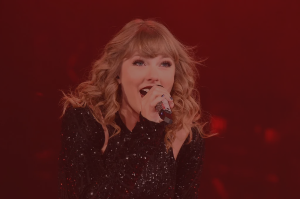

Nashville Songwriters Association International Awards (2007)
Songwriter/Artist of the Year
Teen Choice Awards (2008)
Choice Breakout Artist
Choice Female Artist
Choice Female Album for "Taylor Swift"
Fearless Awards
Grammy Awards (2010)
Album of the Year for "Fearless"
Best Country Album for "Fearless"
Best Female Country Vocal Performance for "White Horse"
Country Music Association Awards (2009)
Entertainer of the Year
Female Vocalist of the Year
Album of the Year for "Fearless"
Music Video of the Year for "Love Story"
American Music Awards (2009)
Artist of the Year
Favorite Country Female Artist
Favorite Country Album for "Fearless"
Billboard Music Awards (2010)
Top Billboard 200 Album for "Fearless"
Top Country Album for "Fearless"
Academy of Country Music Awards (2009)
Album of the Year for "Fearless"
Female Vocalist of the Year
Crystal Milestone Award
Speak Now Awards
Grammy Awards (2012)
Best Country Solo Performance for "Mean"
Country Music Association Awards (2011)
Entertainer of the Year
American Music Awards (2011)
Favorite Country Female Artist
Favorite Country Album for "Speak Now"
Billboard Music Awards (2011)
Top Country Album for "Speak Now"
Top Billboard 200 Album for "Speak Now"
Academy of Country Music Awards (2011)
Choice Female Artist
Choice Female Country Artist
Red Awards
Grammy Awards (2014)
Best Song Written for Visual Media for "Safe & Sound"
Billboard Music Awards (2013)
Top Billboard 200 Album for "Red"
Top Country Album for "Red"
American Music Awards (2013)
Favorite Country Female Artist
Favorite Country Album for "Red"
Teen Choice Awards (2013)
Choice Female Artist
Choice Female Country Artist
Choice Country Song for "We Are Never Ever Getting Back Together"
People's Choice Awards (2014)
Favorite Country Artist
1989 Awards
Grammy Awards (2016)
Album of The Year for "1989"
Best Pop Vocal Album for "1989"
Best Music Video for "Bad Blood"
Billboard Music Awards (2015)
Top Billboard 200 Album for "1989"
Top Female Artist
Top Hot 100 Artist
Top Streaming Song (Video) for "Shake It Off"
American Music Awards (2015)
Favourite Pop/Rock Female Artist
Favourite Pop/Rock Album for "1989"
MTV Video Music Awards (2015)
Video of the Year for "Bad Blood"
Best Female Video for "Blank Space"
Best Pop Video for "Blank Space"
iHeartRadio Music Awards (2015)
Female Artist of the Year
Song of the Year for "Shake It Off"
Best Lyrics for "Blank Space"

reputation Awards
American Music Awards (2018)
Favorite Pop/Rock Album for "reputation"
Tour of the Year
Billboard Music Awards (2018)
Top Selling Album for "reputation"
MTV Video Music Awards (2018)
Best Art Direction for "Look What You Made Me Do"
iHeartRadio Music Awards (2019)
Female Artist of the Year
Best Music Video for "Delicate"
Teen Choice Awards (2018)
Choice Female Artist
Choice Pop Album for "reputation"
Lover Awards
American Music Awards (2019)
Artist of the Year
Favorite Pop/Rock Album for "Lover"
MTV Video Music Awards (2019)
Video of the Year for "You Need to Calm Down"
Billboard Music Awards (2020)
Top Selling Album for "Lover"
People's Choice Awards (2019)
Favorite Album of the Year for "Lover"
iHeartRadio Music Awards (2020)
Album of the Year for "Lover"
Best Lyrics for "Lover"
Teen Choice Awards (2019)
Choice Pop Album for "Lover"
folklore Awards
Grammy Awards (2021)
Album of the Year for "folklore"
Best Song Written for Visual Media for "Beautiful Ghosts"
American Music Awards (2020)
Favorite Pop/Rock Album for "folklore"
Favorite Music Video for "cardigan"
Artist of the Year
Billboard Music Awards (2021)
Top Billboard 200 Album for "folklore"
Top Female Artist
Top Billboard 200 Artist
iHeartRadio Music Awards (2021)
Female Artist of the Year
Pop Album of the Year for "folklore"
evermore Awards
American Music Awards (2021)
Favorite Pop/Rock Album for "evermore"
Favorite Pop/Rock Female Artist
MTV Video Music Awards (2021)
Best Direction for "willow"
Best Visual Effects for "willow"
Album was not submitted for any awards because it has already gotten it's time to shine, with the original
being one of the most awarded country albums in history.
Red (Taylor's Version) Awards
Billboard Music Awards (2022)
Top Country Album for "Red (Taylor's Version)"
Grammy Awards (2023)
Best Music Video for "All Too Well (10 Minute Version)"
American Music Awards (2022)
Favorite Pop/Rock Album for "Red (Taylor's Version)
Favorite Country Album for "Red (Taylor's Version)